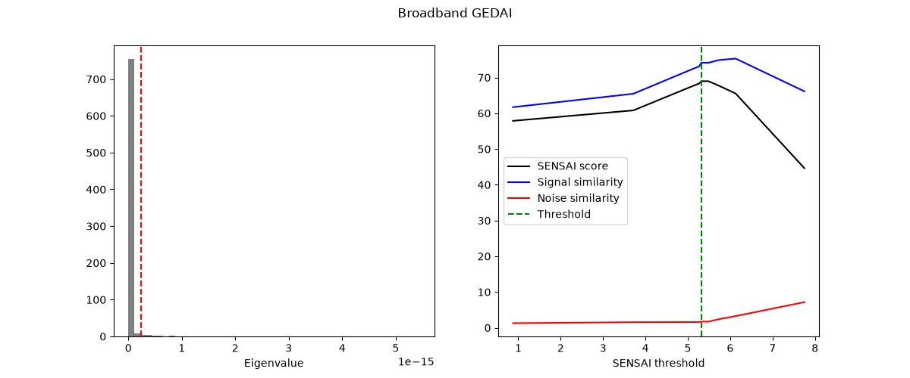
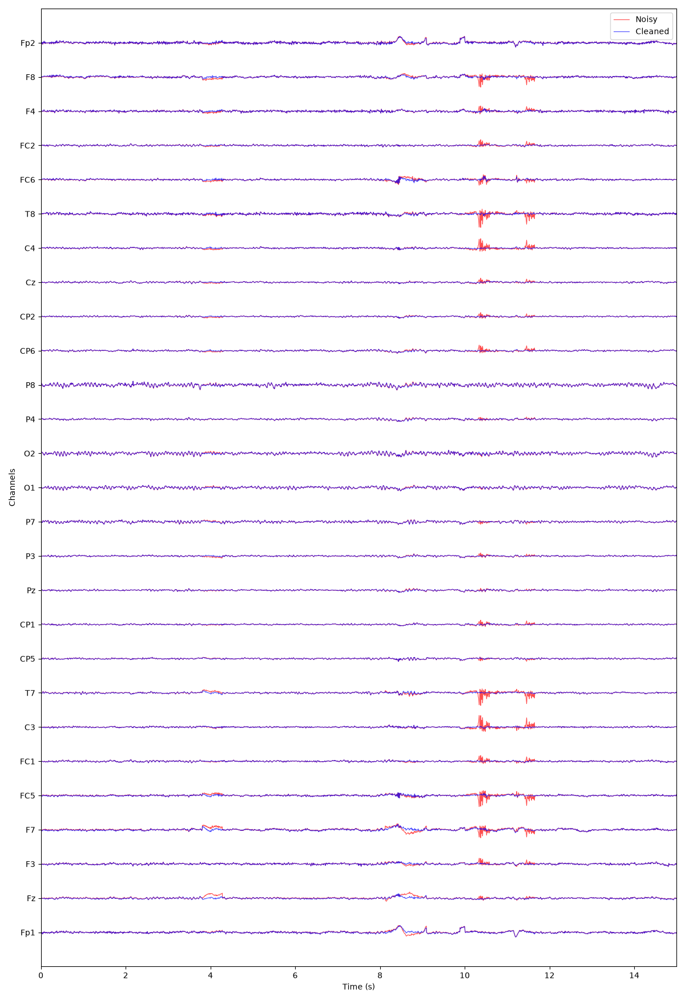

Note
Go to the end to download the full example code.
Understanding the GEDAI model🔗
In this first tutorial, we introduce the GEDAI (Generalized Eigenvalue De-Artifacting Instrument) model. GEDAI is an unsupervised method for denoising EEG data.
Note
This tutorial focuses on model understanding. For practical workflows,
continue with tutorials from the use section (offline templates)
and the advanced section (online and forward-model workflows).
import matplotlib.pyplot as plt
from mne.io import read_raw
from gedai import Gedai
from gedai.data import get_contaminated_eeg_set_path
from gedai.viz import plot_mne_style_overlay_interactive
The GEDAI model can be fitted on Raw or Epochs objects.
%% Load sample EEG data
raw = read_raw(str(get_contaminated_eeg_set_path()), preload=True)
For simplicity, we will only use the first 30 seconds of the data in this tutorial. In practice, it is recommended to use the full recording for fitting the GEDAI model, as this allows the model to better capture the noise characteristics of the data.
raw.crop(0, 30)
GEDAI will automatically apply an average reference before fitting or transforming the data. If the data was referenced to a different reference during acquisition, it is recommended to add the reference channel to the data before using GEDAI. This way the rank of the data will be preserved, and you will be able to reference the data to another reference after denoising if needed.
raw.set_eeg_reference("average", projection=False)
EEG channel type selected for re-referencing
Applying average reference.
Applying a custom ('EEG',) reference.
GEDAI🔗
GEDAI uses generalized eigenvalue decomposition to separate brain signals
from noise based on a leadfield covariance model.
In this tutorial, we will focus on the default GEDAI implementation which
uses broadband EEG data. Please refers to the documentation if you want to learn
more about the Spectral GEDAI and how to use it for frequency-specific denoising.
gedai = Gedai()
Model Fitting🔗
The fitting process estimates the optimal threshold to distinguish between
signal and noise components. GEDAI can be fitted on Raw
or Epochs objects.
If raw data is used, it is internally segmented into epochs before fitting.
The duration parameter controls the epoch length, and the overlap parameter
controls the overlap between consecutive epochs.
Since GEDAI estimates the noise covariance from the data itself,
we usually want bad segments (e.g., with large artifacts) and bad channels
to be included in the fitting process. Unless you have specific requirements,
we recommend keeping the default reject_by_annotation setting.
reject_by_annotation = False # default
The reference covariance defines what good data should look like.
The default leadfield option uses a covariance matrix
based on a generic head model and the standard 10-20 montage.
It is possible to use a custom reference covariance matrix instead,
for example, by using the compute_covariance_from_forward()
function. This topic is covered in the advanced section of the tutorials.
reference_cov = "leadfield"
Note
If you want to test GEDAI on data that does not follow the standard 10-20
naming convention, you can use the mne.io.Raw.interpolate_bads() method to
project your data to a standard 10-20 montage before applying GEDAI.
To determine the optimal threshold for separating signal and noise components,
GEDAI uses the SENSAI algorithm. SENSAI is an unsupervised method that
finds the optimal eigenvalue threshold that maximizes the similarity between
the cleaned data and the reference covariance while minimizing the similarity
between the removed data and the reference covariance.
The noise_multiplier parameter controls the weight given to noise
similarity compared to signal similarity.
Higher values will prioritize keeping more brain signals, potentially at the
expense of removing less noise.
noise_multiplier = 3.0
The optimal threshold can be determined either using continuous bounded scalar
optimization ("optimize", default) or by evaluating a discrete grid of candidate
thresholds ("gridsearch").
sensai_method = "optimize"
Fit the GEDAI model
gedai.fit_raw(
raw,
duration=duration,
overlap=overlap,
reject_by_annotation=reject_by_annotation,
reference_cov=reference_cov,
sensai_method=sensai_method,
noise_multiplier=noise_multiplier,
verbose=True,
)
343 x 343 full covariance (kind = 1) found.
The plot shows the eigenvalue spectrum and the separation between signal
and noise components. The vertical line indicates the optimal threshold
determined by the SENSAI algorithm.

SENSAI internally uses a custom scaling of the eigenvalues, called
SENSAI scaling. Higher SENSAI threshold values correspond to more aggressive
denoising. The signal similarity (blue curve) indicates how similar the
cleaned data is to the reference covariance. In our example, we can see that
initially, as the SENSAI threshold increases, the signal similarity also
increases, indicating that artifactual components are being removed.
However, after a certain point, the signal similarity starts to decrease,
which may indicate that some brain signals are being removed as well.
Conversely, the noise similarity (red curve) remains low up to a certain
SENSAI threshold, indicating that the removed components are dissimilar to
the reference covariance. However, beyond that point, the noise similarity
starts to increase, suggesting that brain signals are being removed along
with noise. The SENSAI score (black curve) combines both signal and noise
similarities to provide an overall measure of denoising quality.
Transform the Data (Denoising)🔗
Once fitted, the GEDAI model can be used to remove artifacts and noise
from the data. The transform operation projects out the noise components
while preserving the brain signals.
We can visualize the difference between the original and denoised data using
an interactive plot. This allows you to inspect individual channels and see
how GEDAI has removed artifacts while preserving neural signals.
plot_mne_style_overlay_interactive(raw, denoised_raw, duration=15.0)

(<Figure size 1200x1750 with 1 Axes>, <Axes: xlabel='Time (s)', ylabel='Channels'>)
Total running time of the script: (0 minutes 4.067 seconds)
Estimated memory usage: 348 MB